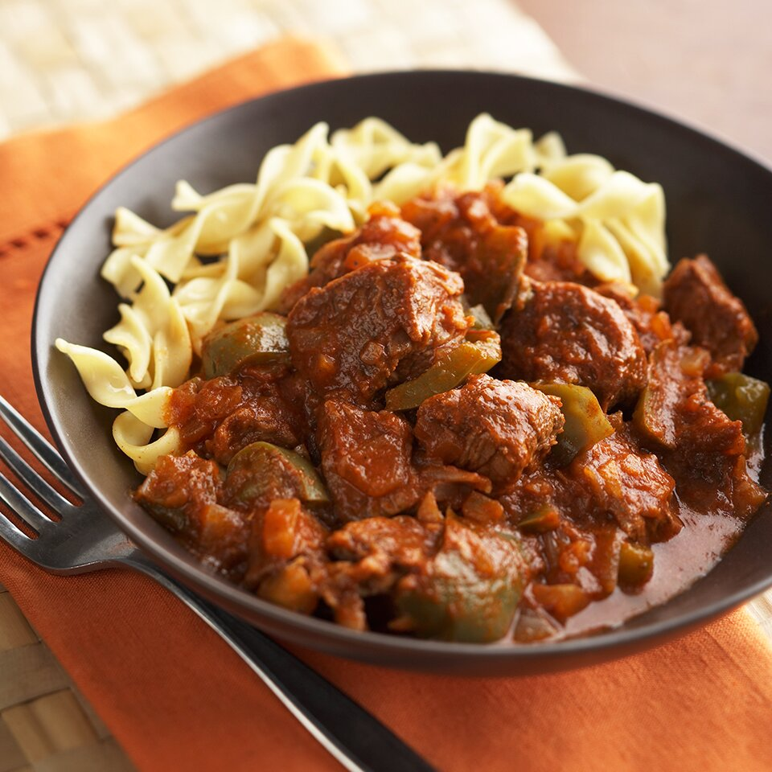

Alex's Goulash

Delicious hungarian Goulash that I make on special occasions. Usually accompanied with spatzle dumplings, mashed potatos, and oven roasted green beans.
Ingredients
- 2-3lbs stew beef
- 2 tbsp olive oil
- 2-3 tbsp paprika
- 1 large white onion chopped
- 3-4 cloves of garlic
- 3 whole peeled tomatoes
- salt and pepper to taste